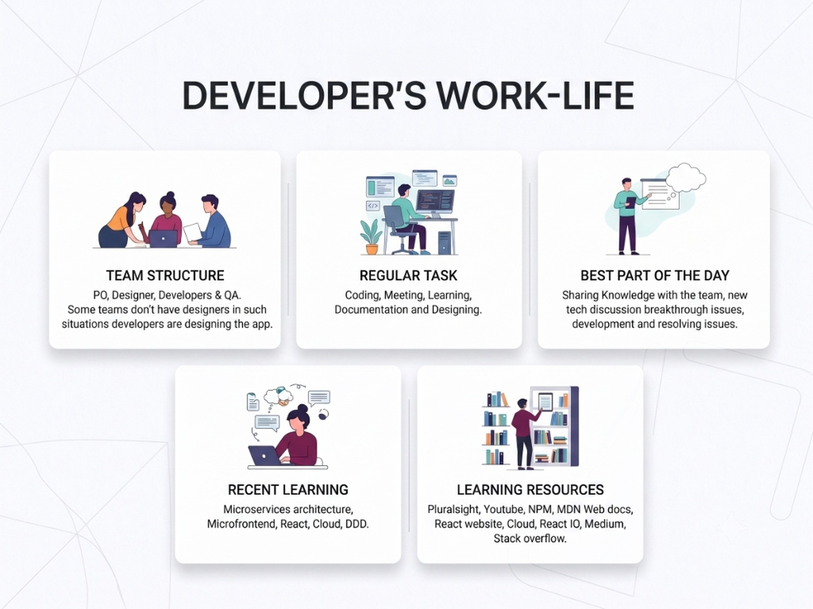
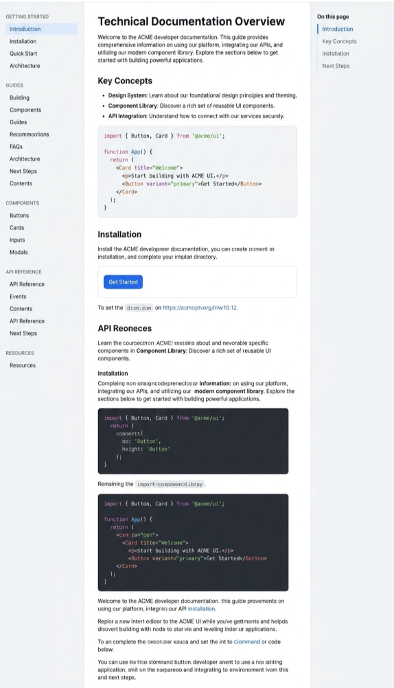
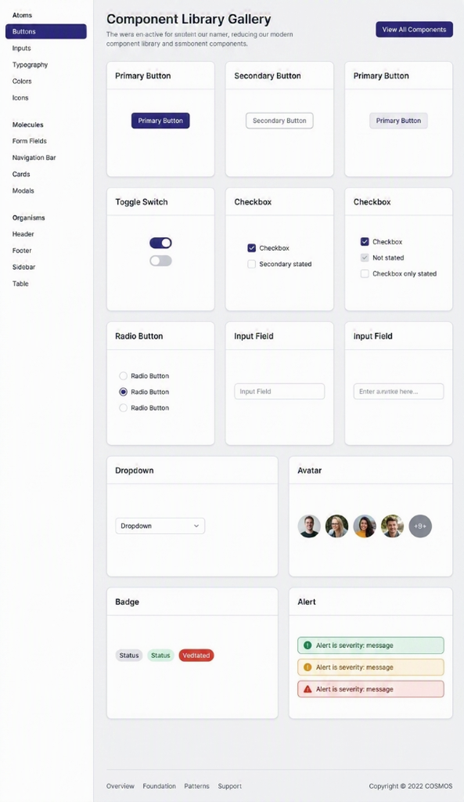

1. Empathise: Understanding the Developer Context
To uncover the root causes of developer friction, I bypassed management assumptions and went straight to the source. I conducted deep-dive contextual inquiry sessions with 10 developers across varying seniority levels, observing their workflows in real-time as they attempted standard platform tasks.
Specific Interview Inquiries
- "Walk me through your exact process when discovering and integrating a new internal API."
- "Where do you go when the official documentation fails to resolve your implementation blocker?"
- "Describe the biggest bottleneck you face when attempting to spin up a new local environment using the current reference app."
- "How do you currently track versioning changes for dependencies across the monolithic repository?"
Survey Data Highlights (N=150)
| Upgrade Readiness Awareness | 100% |
| Primary Communication for Support | Outlook / Teams |
| Technical Adoption Rate (Reference App) | 80% |
| Interest in Internal Community Forums | 71% |
Key Pain Points Identified
- Steep Learning Curve for MFEThe transition to modular architecture lacked structured onboarding. Developers were forced to reverse-engineer documentation intended for senior architects, leading to high error rates in initial setup.
- Fragmented ConnectivityTools, security compliance forms, and API documentation were scattered across disparate, inconsistently branded internal SharePoint sites. Context switching was a primary source of cognitive load.
- Outdated DocumentationWritten guides often lagged behind actual platform capabilities. Developers reported a lack of trust in official resources, preferring informal knowledge sharing networks.
- Support Gaps & Synchronous DependencyOver-reliance on synchronous help via Teams due to poor self-serve options created bottlenecks for lead engineers who spent significant time acting as ad-hoc support agents.
Developer's Work-Life Ecosystem

2. Define: Establishing Target Profiles and Journeys
Synthesizing my research, I defined clear user archetypes to anchor my architectural decisions. I needed to design a system that catered to both those learning the platform and those pushing its boundaries.
Ramya
Intermediate Developer
Ramya needs clear, step-by-step guidance to set up her local environment and fundamentally understand the new MFE architecture paradigms. She values high discoverability, robust "Getting Started" documentation, and clear error messaging. Her primary goal is decreasing her "Time to First Hello World."
Ramesh
Senior Architect
Ramesh focuses on system scalability, enterprise governance, and advanced tooling. He requires fast, unencumbered access to raw API specs, seamless version control switching, and deep performance analytics. His primary goal is maintaining system integrity while increasing team velocity.
The Developer Journey
I mapped the current vs. future state user journey, focusing on the critical path from "Project Assignment" to "First Successful Deployment." The legacy journey involved an average of 14 distinct touchpoints across 5 different systems, fraught with manual approval gates. The redefined journey collapsed this into a unified portal experience, automating provisioning where possible and surfacing necessary documentation contextually alongside the tools themselves.
Current-State User Journey: The Developer Experience
Macro-Phase 1: Set up & start building
Step 1
Discovering COSMOS
Actions
Rely on word-of-mouth or stumble upon the COSMOS Design system Home page.
Friction: Major gap in initial discoverability. Only found if already in use.
Step 2
Onboarding
Actions
Meet Product team, get access, training, read FAQs and architecture docs.
Friction: Raising access requests from multiple sources is highly time-consuming.
Step 3
Getting Started
Actions
Interact with Cosmos, API docs, set up Dev env, MFE Generator, Open hours.
Friction: Steep learning curve; reliant on "Open hours" support.
Macro-Phase 2: Building products
Step 4
Development
Navigate resources (JS/React guides), manage upgrades & security.
Friction: No ready-made codes, low discoverability of reference app.
Step 5
Testing
Conduct Unit Testing and raise defects to Library team.
Friction: Raising defects is unstructured, increasing resolution times.
Step 6
Production
Pass code through FED Scorecard 3.x for production standards.
Step 7
Maintenance
Version upgrades, public release updates, community contribution.
warning
Systemic Journey Blockers
- cancel Fragmented Information: Repetitive content across various URLs.
- cancel Lack of Sequencing: Difficult to understand correct steps to follow.
- cancel Zero Self-Service: Dependent on "Open hours" support.
- cancel Poor Cross-Discoverability: Siloed information.
- cancel Missing MFE Support: Little to no MFE-specific material available.
3. Ideate: Structuring the Solution Architecture
With clear definitions in place, I moved into ideation, brainstorming solutions that directly addressed the pain points of cognitive overload and fragmented workflows. I prioritized features based on technical feasibility and impact on developer velocity.
The 'Big Ideas' Matrix
Automated Code ScaffoldingImplementing a CLI-backed UI tool allowing developers to generate boilerplate React components instantly, pre-configured with enterprise security standards and design tokens.
Integrated Sandbox EditorsEmbedding an in-browser IDE for quick API testing and component playground manipulation directly within the documentation, eliminating the need to spin up local environments for initial evaluation.
C4 Architectural AnalyticsVisualizing system architecture contextually using dynamic C4 model diagrams, helping developers understand upstream and downstream dependencies before making commits.
Seamless Version SwitchingA persistent, global toggle mechanism allowing architects to fluidly switch context between API versions and documentation states without losing their place in the portal.
Information Architecture & Flows
I drastically simplified the IA. I shifted from an organizational-chart-based taxonomy to a task-based taxonomy. The primary navigation was reduced to core verbs: Discover (APIs & Components), Build (Tools & Scaffolding), Learn (Documentation & Patterns), and Manage (Infrastructure & Access). This intuitive mental model was validated through early tree-testing exercises with senior engineering leads.
4. Design: From Wireframes to High-Fidelity Execution
The design phase required balancing high data density with cognitive clarity. I needed an interface that felt sophisticated and powerful, not overly simplified.
Wireframing Core Utilities
Initial low-fidelity wireframes focused strictly on layout structure and module hierarchy. I established a strict, modular grid system to handle complex data tables, extensive code snippet blocks, and multi-pane navigation elements. The primary goal during wireframing was defining the 'Time to First Hello World' flow—ensuring that a new user could navigate from the landing page to a successful boilerplate download in under three clicks. Iterative reviews with engineering stakeholders ensured that the proposed UI structures could be realistically supported by the underlying backend services.
Visual Design & System Integration
The final visual execution adhered to a strict, modern editorial aesthetic. I utilized a highly refined, predominantly monochromatic scheme with subtle brand accents applied only for interactive states or critical status indicators. Typography was paramount; I employed a robust scale using 'Inter' for highly legible, data-dense UI components and 'Inter' to provide a precise, geometric authority for long-form documentation content.
A comprehensive set of design system components was documented, detailing specific interactive behaviors for modal windows, complex nested dropdowns, and terminal-style code blocks. Spacing guidelines and structural annotations were rigorously defined to ensure pixel-perfect implementation by the development team, maintaining a clinical, precise, and professional environment suitable for enterprise software engineering.
Unified Docs

Component Gallery

5. Test & Results: Project Impact
Post-launch validation was conducted through a mix of quantitative analytics tracking and qualitative feedback loops integrated directly into the new portal. The newly designed Developer Central significantly shifted critical internal performance indicators.
| Metric Area | Legacy System (Before) | Design (After) |
|---|
| Search & Discovery | Fragmented across 3 platforms | Unified Central Hub |
| Onboarding Time | Manual, mentor-dependent (Weeks) | Self-service guided paths (Days) |
| Technical Utility | Static, disconnected documentation | Interactive code gen & integrated editors |
The design of Developer Central significantly improved the FED Scorecard metrics, establishing a robust, scalable foundation for the organization's modular MFE future. By treating internal developers as primary, highly-valued users and applying rigorous UX methodologies, I transformed a disjointed utility into a critical, beloved enablement platform.
Phase 2 — Evolving Developer Central with AI
Moving beyond documentation into intelligent developer workflows
The design of Developer Central successfully centralized documentation, tools, and onboarding resources into a single platform. However, our research uncovered a deeper problem: developers weren't struggling because information didn't exist—they were struggling because finding the right information, and turning it into working code, required significant effort.
Our next opportunity was clear: instead of simply helping developers navigate documentation, Developer Central should actively help them build software. This led us to explore how AI could become part of the developer workflow rather than another standalone tool.
Research Insights
Our generative research revealed two recurring pain points across beginner and experienced developers.
Insight 01
"I need ready-made code to start faster."
New developers spent considerable time configuring environments, understanding COSMOS dependencies, and manually creating boilerplate code before writing actual business logic.
Insight 02
"I know the documentation exists. I just can't find it."
Resources were distributed across COSMOS, API documentation, GitHub repositories, migration guides, and internal learning platforms. Developers spent more time searching than building.
Design Opportunity
We identified an opportunity to evolve Developer Central from a documentation portal into an intelligent development assistant. Rather than introducing separate AI products, we embedded AI directly into workflows developers were already using.
The two highest-impact opportunities were:
- AI-Assisted MFE Code Generation: Eliminating the "Getting Started" bottleneck.
- Semantic Search & Intelligent Discoverability: Finding answers instead of documents.
Solution 01
AI-Assisted MFE Code Generation
One of the most painful moments occurred during project setup. New developers had to configure dependencies, understand COSMOS architecture, interpret complex component documentation, and manually scaffold Micro Frontends. Many relied on support sessions before writing their first line of code.
Our Design Approach
Instead of creating another AI application, we enhanced the existing MFE Generator already available inside Developer Central. This allowed AI capabilities to fit naturally into existing workflows.
New MFE Generation Workflow
Step 1
Developers open the MFE Generator directly from the Developer Tools section.
arrow_downward
Step 2
A visual canvas allows developers to drag UI components directly from the COSMOS design system.
arrow_downward
Step 3
AI understands the selected layout and automatically generates production-ready COSMOS 4.x React/TypeScript code.
arrow_downward
Step 4
Complex inherited properties, child configurations, imports, and dependencies are automatically configured.
arrow_downward
Step 5
The generated Micro Frontend can immediately be validated using the existing FED Scorecard.
Design Principle
Rather than replacing developers, AI removes repetitive setup work while keeping developers in control of implementation. Developers spend time solving business problems—not writing boilerplate.
80%
Reduction in project setup time
65%
Reduction in Level-1 support requests
Faster MFE Adoption
Lowering the curve encourages migration from monoliths.
Solution 02
Semantic Search & Intelligent Discoverability
Research consistently showed that developers already knew the documentation existed. The real challenge was knowing where to look. Traditional keyword search required developers to understand document names, repositories, and platform structure before they could search.
Our Design Approach
Rather than designing search, we replaced the underlying search experience with semantic understanding. The existing global search bar became an AI-powered knowledge assistant.
search
"How do I change a button to Standard Skin in React?"
Instead of returning dozens of matching files, Developer Central now provides a synthesized answer with the relevant React code snippet, links to the exact COSMOS component, and related migration guides.
Retrieves knowledge from:
COSMOS Component Library
API Registry
Migration Documentation
Release Notes
65%
Reduction in search time
Self-Service
Resolve implementation questions independently
Unified Knowledge
One source for all framework knowledge
Workflow Comparison
Before
Search Docs
↓
Open Multiple Platforms
↓
Read Documentation
↓
Ask Support
↓
Write Boilerplate
↓
Start Development
≈ Several hours to days
After
Open Developer Central
↓
Ask AI / Generate MFE
↓
Receive Working Code
↓
Validate with FED Scorecard
↓
Start Development
≈ Minutes
Measuring Success
| Metric |
Expected Outcome |
| Initial MFE setup time |
↓ 80% |
| Level-1 support tickets |
↓ 65% |
| Documentation search time |
↓ 65% |
| MFE adoption |
↑ 40% within one quarter |
| Developer self-service |
Significant increase |
User Feedback
"Earlier I had to wait for someone to help me set up COSMOS. Now I simply drag the components I need, and the generator creates everything for me. I can start building immediately."
— Beginner Developer
"Instead of searching across multiple platforms, I ask a question and immediately receive the exact implementation with links to the correct documentation. It finally feels like one developer platform."
— Senior Developer
"Routine onboarding questions have reduced significantly. Instead of answering repetitive setup issues, we can now focus on improving the platform itself."
— Platform Support Team
Reflection
This phase fundamentally changed the role of Developer Central. The platform evolved from being a knowledge repository into an AI-powered development companion.
By embedding AI into existing workflows—instead of introducing separate tools—we reduced onboarding friction, improved discoverability, and enabled developers to spend more time building products and less time searching for information.